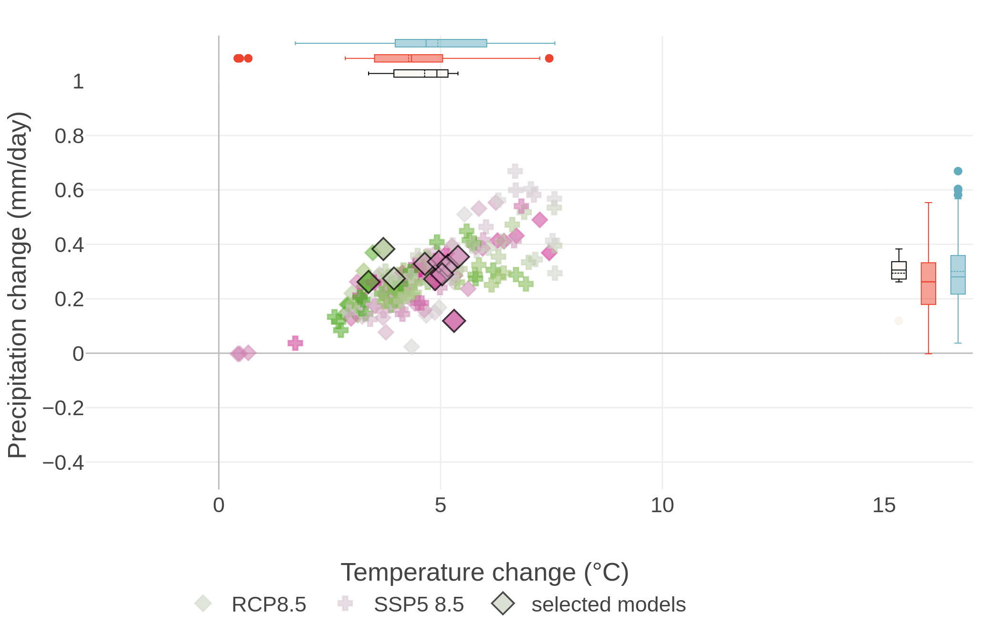

2 Climate Models
Overview text on selected Climate Models
2.1 DICE Climate Model
Independent of the normative assumptions of inequality aversion and time preferences, the Paris agreement constitutes the economically optimal policy pathway for the century. Authors claim they show this by incorporating a damage-cost curve reproducing the observed relation between temperature and economic growth into the integrated assessment model DICE.
Glanemann (2021) DICE Paris CBA (pdf)
2.1.1 The failure of Dice Economics
If there is one climate economist who is respected above all others, it’s William Nordhaus of Yale, who won the Econ Nobel in 2018 “for integrating climate change into long-run macroeconomic analysis.” The prize specifically cited Nordhaus’ creation of an “integrated assessment model” for analyzing the costs of climate change. The most famous of these is the DICE Model, used by the Environmental Protection Agency.
But the DICE Model, or at least the version we’ve been using for years, is obviously bananas.
For other economists look here
2.2 EZ-Climate Model
Some text on EZClimate
2.3 FAIR Climate Model
The FAIR model satisfies all criteria set by the NAS for use in an SCC calculation. 22 Importantly, this model generates projections of future warming that are consistent with comprehensive, state- of-the-art models and it can be used to accurately characterize current best understanding of the uncertainty regarding the impact that an additional ton of CO 2 has on global mean surface temperature (GMST). Finally, FAIR is easily implemented and transparently documented, 23 and is already being used in updates of the SCC. 24
A key limitation of FAIR and other simple climate models is that they do not represent the change in global mean sea level rise (GMSL) due to a marginal change in emissions.
2.4 Global Calculator
Used by Kuhnhenn - STS - Heinrch Böll Stiftung
2.5 Monash Climate Model
Some text on Monash Model
2.6 NorESM
Norwegian Earth System Model
About
A climate model solves mathematically formulated natural laws on a three-dimensional grid. The climate model divides the soil system into components (atmosphere, sea, sea ice, land with vegetation, etc.) that interact through transmission of energy, motion and moisture. When the climate model also includes advanced interactive atmosphere chemistry and biogeochemical cycles (such as the carbon cycle), it is called an earth system model.
The Norwegian Earth System Model NorESM has been developed since 2007 and has been an important tool for Norwegian climate researchers in the study of the past, present and future climate. NorESM has also contributed to climate simulation that has been used in research assessed in the IPCC’s fifth main report.
INES
The project Infrastructure for Norwegian Earth System Modeling (INES) will support the further development of NorESM and help Norwegian scientists also gain access to a cutting-edge earth system model in the years to come. Technical support will be provided for the use of a more refined grid, the ability to respond to climate change up to 10 years in advance, the inclusion of new processes at high latitudes and the ability of long-term projection of sea level. Climate simulations with NorESM are made on some of the most powerful supercomputers in Norway, and INES will help these exotic computers to be exploited in the best possible way and that the large data sets produced are efficiently stored and used. The project will ensure that researchers can efficiently use the model tool, analyze results and make the results available.
2.6.1 CCSM4
UCAR NCAR
The University Corporation for Atmospheric Research (UCAR) is a US nonprofit consortium of more than 100 colleges and universities providing research and training in the atmospheric and related sciences. UCAR manages the National Center for Atmospheric Research (NCAR) and provides additional services to strengthen and support research and education through its community programs. Its headquarters, in Boulder, Colorado, include NCAR’s Mesa Laboratory. (Wikipedia)
CCSM
The Community Climate System Model (CCSM) is a coupled climate model for simulating Earth’s climate system. CCSM consists of five geophysical models: atmosphere (atm), sea-ice (ice), land (lnd), ocean (ocn), and land-ice (glc), plus a coupler (cpl) that coordinates the models and passes information between them. Each model may have “active,” “data,” “dead,” or “stub” component version allowing for a variety of “plug and play” combinations.
During the course of a CCSM run, the model components integrate forward in time, periodically stopping to exchange information with the coupler. The coupler meanwhile receives fields from the component models, computes, maps, and merges this information, then sends the fields back to the component models. The coupler brokers this sequence of communication interchanges and manages the overall time progression of the coupled system. A CCSM component set is comprised of six components: one component from each model (atm, lnd, ocn, ice, and glc) plus the coupler. Model components are written primarily in Fortran 90.
CESM
The Community Earth System Model (CESM) is a fully-coupled, global climate model that provides state-of-the-art computer simulations of the Earth’s past, present, and future climate states.
CESM2 is the most current release and contains support for CMIP6 experiment configurations.
Simpler Models
As part of CESM2.0, several dynamical core and aquaplanet configurations have been made available.
2.6.2 NorESM Features
Despite the nationally coordinated effort, Norway has insufficient expertise and manpower to develop, test, verify and maintain a complete earth system model. For this reason, NorESM is based on the Community Climate System Model version 4, CCSM4, operated at the National Center for Atmospheric Research on behalf of the Community Climate System Model (CCSM)/Community Earth System Model (CESM) project of the University Corporation for Atmospheric Research.
NorESM is, however, more than a model “dialect” of CCSM4. Notably, NorESM differs from CCSM4 in the following aspects: NorESM utilises an isopycnic coordinate ocean general circulation model developed in Bergen during the last decade originating from the Miami Isopycnic Coordinate Ocean Model (MICOM). The atmospheric module is modified with chemistry–aerosol–cloud–radiation interaction schemes developed for the Oslo version of the Community Atmosphere Model (CAM4-Oslo). Finally, the HAMburg Ocean Carbon Cycle (HAMOCC) model developed at the Max Planck Institute for Meteorology, Hamburg, adapted to an isopycnic ocean model framework, constitutes the core of the biogeochemical ocean module in NorESM. In this way NorESM adds to the much desired climate model diversity, and thus to the hierarchy of models participating in phase 5 of the Climate Model Intercomparison Project (CMIP5). In this and in an accompanying paper (Iversen et al., 2013), NorESM without biogeochemical cycling is presented. The reader is referred to Assmann et al. (2010) and Tjiputra et al. (2013) for a description of the biogeochemical ocean component and carbon cycle version of NorESM, respectively.
There are several overarching objectives underlying the development of NorESM. Western Scandinavia and the surrounding seas are located in the midst of the largest surface temperature anomaly on earth governed by anomalously large oceanic and atmospheric heat transports. Small changes to these transports may result in large and abrupt changes in the local climate. To better understand the variability and stability of the climate system, detailed studies of the formation, propagation and decay of thermal and (oceanic) fresh water anomalies are required.
NorESM is, as mentioned above, largely based on CCSM4. The main differences are the isopycnic coordinate ocean module in NorESM and that CAM4-Oslo substitutes CAM4 as the atmosphere module. The sea ice and land models in NorESM are basically the same as in CCSM4 and the Com- munity Earth System Model version 1 (CESM1), except that deposited soot and mineral dust aerosols on snow and sea ice are based on the aerosol calculations in CAM4-Oslo.
2.6.2.1 NorESM Aerosol Interactions
The aerosol module is extended from earlier versions that have been published, and includes life-cycling of sea salt, mineral dust, particulate sulphate, black carbon, and primary and secondary organics. The impacts of most of the numer- ous changes since previous versions are thoroughly explored by sensitivity experiments. The most important changes are: modified prognostic sea salt emissions; updated treatment of precipitation scavenging and gravitational settling; inclu- sion of biogenic primary organics and methane sulphonic acid (MSA) from oceans; almost doubled production of land- based biogenic secondary organic aerosols (SOA); and in- creased ratio of organic matter to organic carbon (OM/OC) for biomass burning aerosols from 1.4 to 2.6. Compared with in situ measurements and remotely sensed data, the new treatments of sea salt and dust aerosols give smaller biases in near-surface mass concentrations and aerosol optical depth than in the earlier model version. The model biases for mass concentrations are approximately un- changed for sulphate and BC. The enhanced levels of mod- led OM yield improved overall statistics, even though OM is still underestimated in Europe and overestimated in North America. The global anthropogenic aerosol direct radiative forc- ing (DRF) at the top of the atmosphere has changed from a small positive value to −0.08 W m −2 in CAM4-Oslo. The sensitivity tests suggest that this change can be attributed to the new treatment of biomass burning aerosols and gravita- tional settling. Although it has not been a goal in this study, the new DRF estimate is closer both to the median model estimate from the AeroCom intercomparison and the best es- timate in IPCC AR4. Estimated DRF at the ground surface has increased by ca. 60 %, to −1.89 W m −2
The increased abundance of natural OM and the introduc- tion of a cloud droplet spectral dispersion formulation are the most important contributions to a considerably decreased es- timate of the indirect radiative forcing (IndRF). The IndRF is also found to be sensitive to assumptions about the coat- ing of insoluble aerosols by sulphate and OM. The IndRF of −1.2 W m −2 , which is closer to the IPCC AR4 estimates than the previous estimate of −1.9 W m −2 , has thus been obtained without imposing unrealistic artificial lower bounds on cloud droplet number concentrations.
Bentsen (2013) NorESM - Part 1 (pdf)
Iversen (2013) NorESM - Part 2 (pdf)
Assmann (2010) Biogeochemical Ocean Component - Isopycnic (pdf)
Tjiputra (2010) Carbon Cycle Component (pdf)
2.7 Goal Index
In economic modelling choice of goal index (utility) function matters. Daniel 20181 presents this figure:

Fig. Optimal CO2-prices with increasing risk aversion for EZ vs CRRA utility specification. (From Daniel 2018)
As one of the co-authors explain: ‘We where not able to get the Social Cost of Carbon (SCC) under $120.’ That is for ‘reasonable risk aversion,’ using EZ-utilities. The ‘standard’ specification - with CRRA - utilities ends up with SCC of $20 or below.
\[V_1 = A [\tilde{C\_t}, \mu_t(V\_{t+1})]\]
Specification of the Goal Index function may seem a trivial technical issue - no so! There exists a broad professional litterature and profound discussions on this matter - which might de difficult to dis-entangle.
Let us begin with Frank Ramsey’s growth model from 1928, commonly known as the Ramsey-Cass-Koopmans model.
\(F(K,L)\) is an aggregate production function with factors \(K\) (Capital) and \(L\) (Labour).
2.8 Model Drift
Abstract Sausen
A method is proposed for removing the drift of coupled atmosphere-ocean models, which in the past has often hindered the application of coupled models in climate response and sensitivity experiments. The ocean-atmosphere flux fields exhibit inconsistencies when evaluated separately for the individual sub-systems in independent, uncoupled mode equilibrium climate computations. In order to balance these inconsistencies a constant ocean-atmosphere flux correction field is introduced in the boundary conditions coupling the two sub-systems together. The method ensures that the coupled model operates at the reference climate state for which the individual model subsystems were designed without affecting the dynamical response of the coupled system in climate variability experiments. The method is illustrated for a simple two component box model and an ocean general circulation model coupled to a two layer diagnostic atmospheric model.
Memo Barthel
The coupling of different climate sub-systems poses a number of technical problems. An obvious problem arising from the different time scales is the synchronization or matching of the numerical integration of subsys- tems characterized by widely differing time steps. A more subtle problem is
Model Drift When two general circulation models of the atmosphere and ocean are coupled together in a single model, it is generally found that the cou- pled system gradually drifts into a new climate equilibrium state which is far removed from the observed climate. The coupled model climate equilibrium may be so unrealistic (for example, with respect to sea ice extent, or the oceanic equa- torial current system) that climate response or sensitivity experiments relative to this state be- come meaningless. This occurs regularly even when the individual models have been carefully tested in detailed numerical experiments in the decoupled mode and have been shown to yield satisfactory simulations of the climate of the sepa- rate ocean or atmosphere sub-systems. The drift of the coupled model is clearly a sign that something is amiss with the models. Howev- er, we suggest that it is not necessary to wait with climate response and sensitivity experiments with coupled models unit all causes of model drift have been properly identified and removed. Model drift is, in fact, an extremely sensitive indi- cator of model imperfections. The fact that the equilibrium climate into which a coupled model drifts is unacceptably far removed from the real climate does not necessarily imply that the model dynamics are too unrealistic for the model to be applied for climate response and sensitivity ex- periments. One should therefore devise methods for separating the drift problem from the basically independent problem of determining the change of the simulated climate induced by a change in boundary conditions a n d / o r external forcing (cli- mate response), and from the question of the ef- fect of changes in the physical or numerical for- mulation of the model (model sensitivity).
Flux Correction The separation of the mean climate simulation from the climate response or sensitiv- ity problem can be achieved for coupled models rather simply by an alternative technique, the flux correction method. The errors that result in a drift of the coupled model are compensated in this method by con- stant correction terms in the flux expressions by which the separate sub-system models are cou- pled together. The correction terms have no in- fluence on the dynamics of the system in climate response or sensitivity experiments, but ensure that the “working point” of the model lies close to the climate state for which the individual models were originally tuned. The basic principle of the flux correction method is to couple the atmosphere and the ocean in such a manner that in the unperturbed case each sub- system simulates its own mean climate in the same manner as in the uncoupled mode, but re- sponds fully interactively to the other sub-system in climate response or sensitivity experiments.
Sausen (1988) Coupled Ocean-Atmosphere Model Drift Flux Correction (pdf)
2.9 Spatial Shock
2.9.1 Coastal Flooding
Desmet
Just moving to higher grounds
Nobel Prize winner William Nordhaus has called climate change “the ultimate challenge for economics.”
Economists increasingly have been trying to understand how rising tides and global temperatures will impact resource allocation around the globe, as well as the potential policy tools that can help curb damage to our natural world.
SMU professor Klaus Desmet says that a lot of those analyses are missing a critical factor: migration.
Desmet coauthored a paper in the American Economic JournalEvaluating the Economic Cost of Coastal Flooding (paywall): Macroeconomics that examines how economic output will be affected over the next 200 years as humans move away from coastal areas threatened by rising sea levels. Although losses in vulnerable Southeast Asian cities such as Bangkok and Shanghai will still be very significant, their research shows that overall GDP declines are substantially less than predicted by models that don’t account for spatial shifts in economic activity.
Climate change is to a large extent a spatial shock.
Migration as one of the key responses to climate change.
What we find in our model is that at a global level, flooding decreases real GDP by about 0.1 percent by the year 2200. If we were to completely ignore the dynamic spatial response of the economy, if we were to have everyone stay put in the face of rising seas, then the loss would actually increase to 4.5 percent. So, that difference between 0.1 and 4.5 percent underscores the first-order importance of taking into account moving, migration, and the spatial dynamic response of the economy to rising sea levels.
We develop a high resolution dynamic model of the world economy. This model splits up the world into 64,800 1° by 1° grid cells, which are linked to each other through trade and migration. We feed into this model high-quality projections of both global and local sea level rise over the next 200 years. . . . When we run our model forward, we can then assess what the economic effect will be of having these pieces of land lost for production.
We find large losses in coastal areas of south and east Asia, with countries such as Vietnam, Thailand, and Bangladesh losing up to 10 percent of real GDP in present discounted value terms over the next 200 years. Other areas that will also suffer disproportionately include coastal Northwest Europe, [and] some areas on the US East Coast and Gulf Coast. By contrast, the Pacific Coast of the Americas is much less affected and, in fact, most of the coastal areas of Africa are also a lot less affected.
2.10 Model-evaluation
GCMeval: a tool for climate model ensemble evaluation

The global climate models indicate quite a range of future outcomes in terms of precipitation and temperature. To account for that, regional scenarios need to use fairly large multi-model ensembles.
2.10.1 Measuering Forcings
Earth is on a budget – an energy budget. Our planet is constantly trying to balance the flow of energy in and out of Earth’s system. But human activities are throwing that off balance, causing our planet to warm in response.
Adding more components that absorb radiation – like greenhouse gases – or removing those that reflect it – like aerosols – throws off Earth’s energy balance, and causes more energy to be absorbed by Earth instead of escaping into space. This is called a radiative forcing, and it’s the dominant way human activities are affecting the climate.
limate modelling predicts that human activities are causing the release of greenhouse gases and aerosols that are affecting Earth’s energy budget. Now, a NASA study has confirmed these predictions with direct observations for the first time: radiative forcings are increasing due to human actions, affecting the planet’s energy balance and ultimately causing climate change. The paper was published online March 25, 2021, in the journal Geophysical Research Letters.
NASA’s Clouds and the Earth’s Radiant Energy System (CERES) project studies the flow of radiation at the top of Earth’s atmosphere. A series of CERES instruments have continuously flown on satellites since 1997. Each measures how much energy enters Earth’s system and how much leaves, giving the overall net change in radiation. That data, in combination with other data sources such as ocean heat measurements, shows that there’s an energy imbalance on our planet. But it doesn’t tell us what factors are causing changes in the energy balance.
This study used a new technique to parse out how much of the total energy change is caused by humans. The researchers calculated how much of the imbalance was caused by fluctuations in factors that are often naturally occurring, such as water vapor, clouds, temperature and surface albedo (essentially the brightness or reflectivity of Earth’s surface). The researchers calculated the energy change caused by each of these natural factors, then subtracted the values from the total. The portion leftover is the radiative forcing.
The team found that human activities have caused the radiative forcing on Earth to increase by about 0.5 Watts per square meter from 2003 to 2018. The increase is mostly from greenhouse gases emissions from things like power generation, transport and industrial manufacturing. Reduced reflective aerosols are also contributing to the imbalance.
See Links to references↩︎